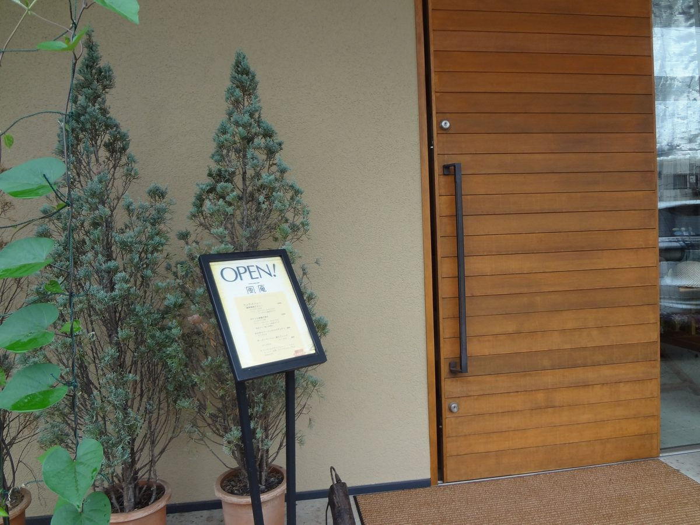
HŪ AN
野木町丸林の住宅地で、一軒の店をしております。
お昼はその週のお料理を、そのあとはお茶の時間を。
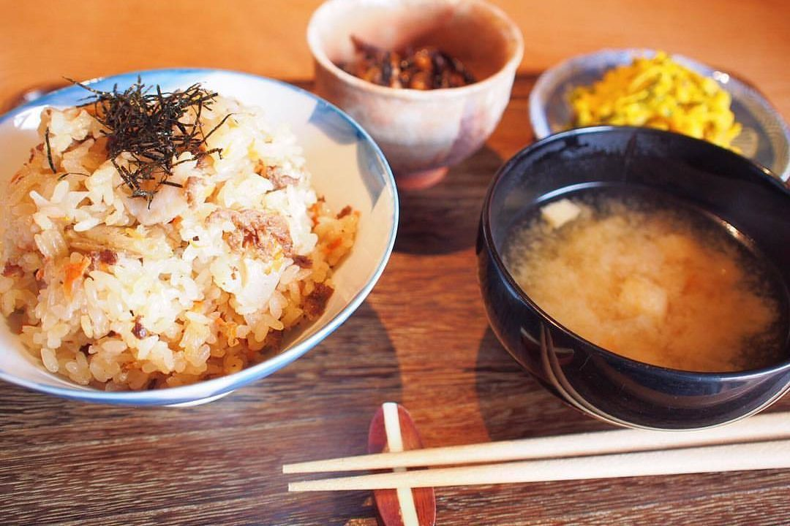
お昼のお料理は、その週ごとにご用意しております。ミニデザートと、コーヒー・アイスコーヒー・紅茶・アイスティーのいずれかをお付けしてお出しします。
ランチの時間は 11:30〜14:00 です。お一人でも、どうぞお気軽にお立ち寄りください。
1,300円税込／2026年6月現在
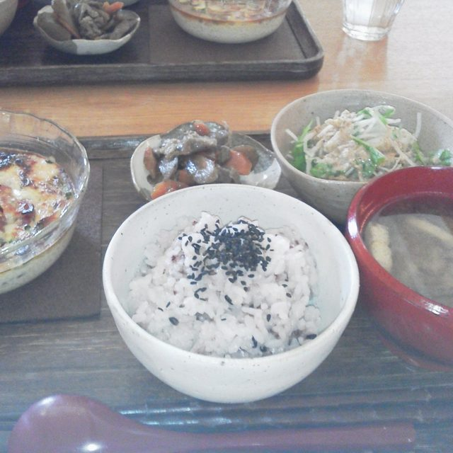
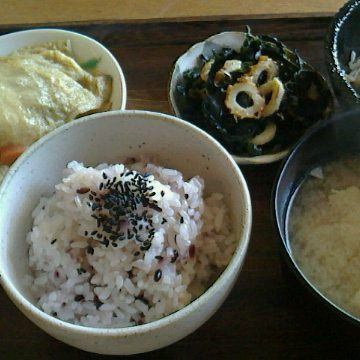
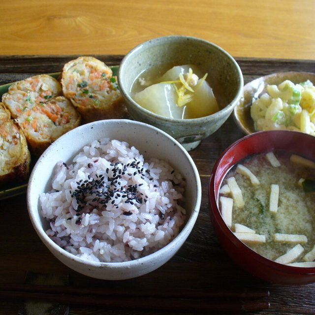
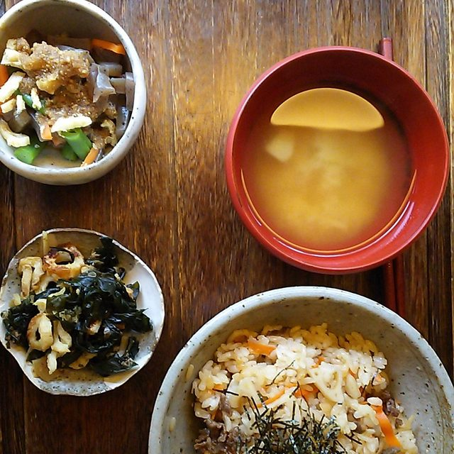
これまでにお出ししたお昼のお料理です。週ごとに変わりますので、同じお料理をご用意できない日がございます。
常設のギャラリーでは、洋服や小物、アクセサリーなどを展示販売しております。お食事やお茶のついでに、どうぞご覧ください。
お品はそのときどきで入れ替わります。いま並んでいるものは、お電話でもお答えいたします。気になるものがございましたら、どうぞお声がけください。
友達の家を訪ねてきたような、あたたかい雰囲気を持った空間です。どうぞゆったりとした時間をお楽しみください。
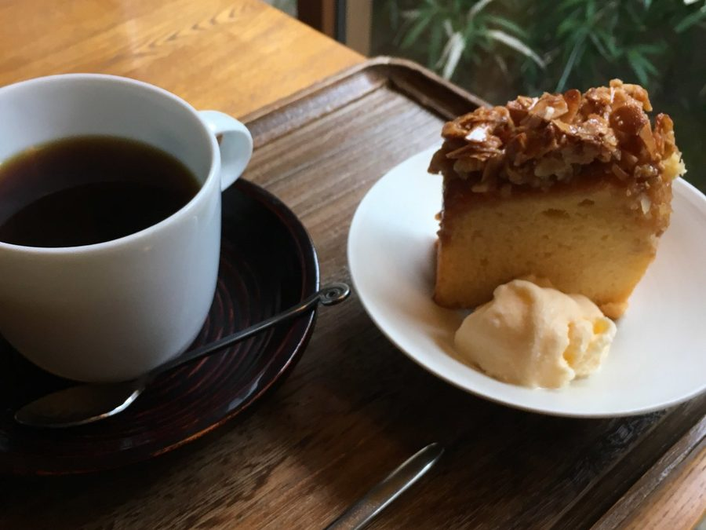
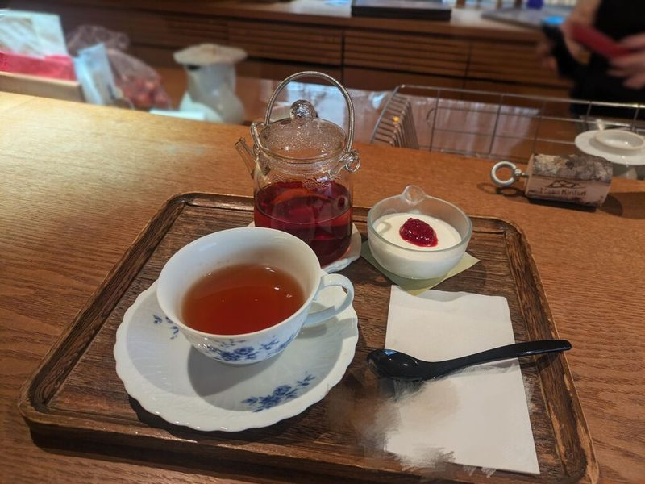
木の卓と椅子を並べた店内で、お一人でも、お連れさまとでも、どうぞごゆっくりお過ごしください。
お出しする器は、ひとつずつ違うものをお使いいただいております。お飲みものの器も、その日によって変わります。
店内は全面禁煙です。お支払いは現金でお願いしております。
「落ち着いた雰囲気が素敵なお店で、ゆったりとした時間を過ごすことができました。店内は居心地がよく、一人でも友人とでものんびり過ごせそうな空間です」
お客様の声より
「上品な陶器で飲む食後のコーヒーが、何とも味わい深い一杯です」
お客様の声より
「お皿やカップがそれぞれ違うのも趣きがありました」
お客様の声より
お店は住宅地のなかにございます。野木駅からは歩いて3分ほどです。はじめてお越しの際は、この三つを目印になさってください。
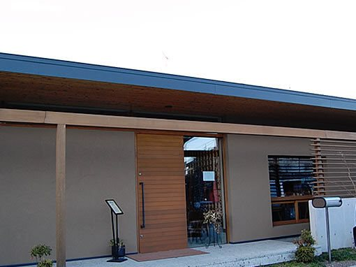
屋根の低い、横に長い建物
白い壁に木の扉がひとつ。その脇に案内の板を出しております。
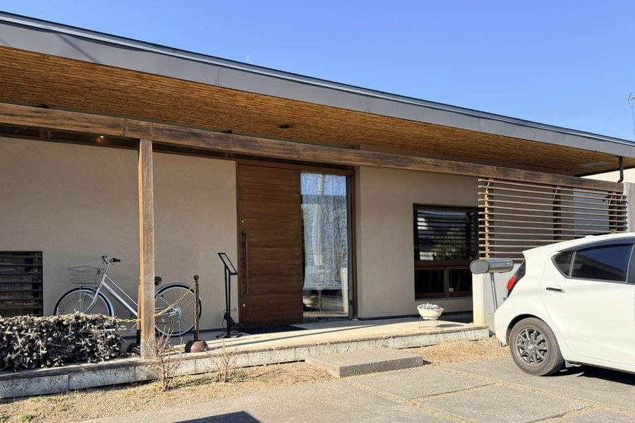
店の前の駐車場
お車は店の前にお停めいただけます。
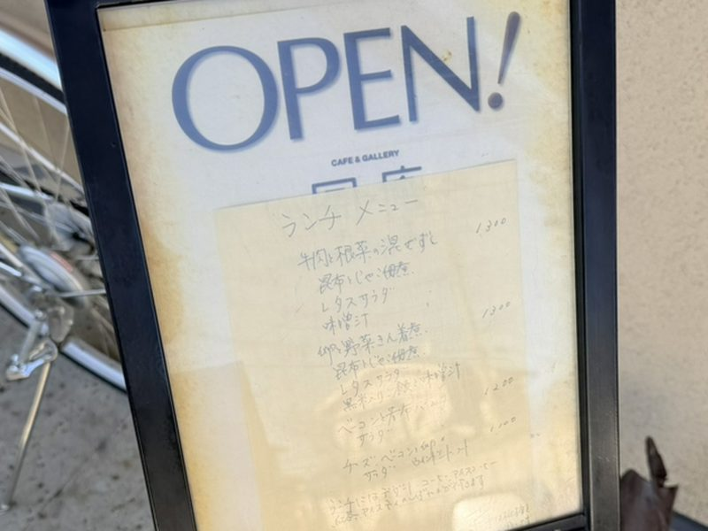
入口のご案内
開いている日は、入口にご案内の板を出しております。
| 住所 | 〒329-0111 栃木県下都賀郡野木町丸林389-3 |
|---|---|
| 電話 | 0280-57-1531 |
| 営業時間 | 11:30〜18:00 （ランチ 11:30〜14:00） |
| 定休日 | 日曜日・月曜日・第1土曜日 |
| 最寄り駅 | JR宇都宮線 野木駅から徒歩3分ほど |
| 駐車場 | ございます（店の前） |
| 喫煙 | 店内は全面禁煙です |
| お支払い | 現金でお願いしております |